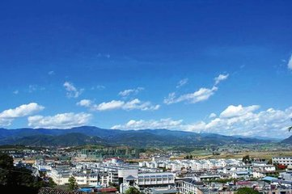
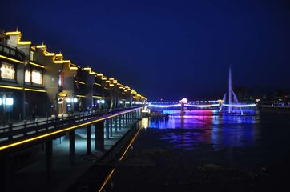
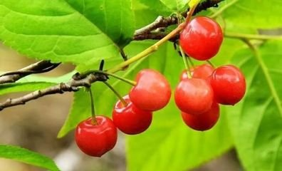
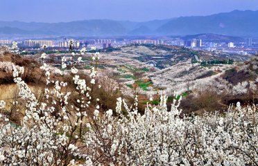

故乡-西乡
西乡县位于陕西南部，汉中东部，东邻石泉、汉阴，南接镇巴和四川通江，北连洋县，西与城固、南郑接壤。南北宽64.5公里，东西长94.5公里，总面积3240平方公里，其中山区占64.79%，丘陵占28.35%，平川占6.86%。阳安铁路横贯东、西，长约70公里，210、316国道纵横穿越县境。西乡境内的樱桃沟是中国第二大樱桃基地，自古有"秦岭南麓小江南"美誉，被联合国科教文卫组织官员誉为"最适合人类居住的地方之一"。

2018年9月25日，获得商务部“2018年电子商务进农村综合示范县”荣誉称号。2018年11月20日，入选第二批国家生态文明建设示范市县初选名单。
特产有：樱桃，茶叶，松花变蛋，牛肉干，凉皮
自然风景：樱桃沟，午子山，太白洞，七星湖，枣园湖，鹿龄寺，骆家坝古镇，米仓山自然区